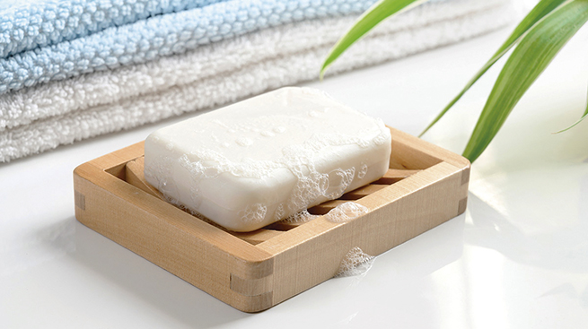
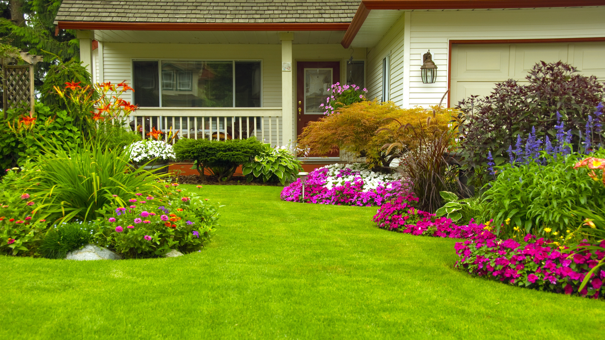

Introducción:
En esta página encontraremos las palabras más comunes para la letra J
- Jabón: Producto soluble en agua resultado de la combinación de un álcali con los ácidos del aceite u otro cuerpo graso, que se usa generalmente para lavar. 
-
Jaguar: Felino americano de hasta dos metros de longitud y unos 80 centímetro(s) de alzada, pelaje de color amarillo dorado con manchas en forma de anillos negros, garganta y vientre blanquecinos, que vive en zonas pantanosas de América, desde California hasta la Patagonia.

- Jardín: Terreno donde se cultivan plantas con fines ornamentales. 
- Jeringa: Instrumento compuesto de un tubo que termina por su parte anterior en un cañoncito delgado, y dentro del cual juega un émbolo por medio del que asciende primero, y se arroja o inyecta después, un líquido cualquiera.
-
Jirafa: Mamífero artiodáctilo rumiante, originario de África, de hasta cinco metros de altura de los que la mitad corresponden al cuello, largo, esbelto y rígido, de pelaje leonado con grandes manchas poligonales oscuras y la cabeza con dos pequeños cuernos cubiertos de piel.